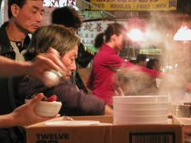
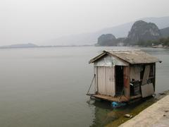

Voyage en Chine
Ce carnet relate le voyage d’un mois en Chine du Sud effectué avec Ghiz et Jérémie en janvier 2003. C’est un mélange d’impressions notées sur le vif, et qui ont pu évoluer ensuite, et de remarques faites a posteriori. Un peu un livre de comptes aussi, puisque j’indique les tarifs à l’attention des voyageurs qui suivront nos pas ; sauf mention contraire ils sont donnés pour une seule personne pour les billets de transport et les hôtels, et pour trois pour les notes de restaurant.
dimanche, 21h37
Nous embarquons dans une heure. Jérémie est parti téléphoner ; Ghiz révise son phrasebook. En face de moi une jeune Chinoise, sac Vuitton en bandoulière, est plongée dans un roman à la couverture rose dont elle tourne les pages de droite à gauche. À mesure que les passagers arrivent grandit mon impression d’être déjà en Chine. Seuls Ghiz à ma droite, qui après avoir évoqué Dune, Asimov et Tolkien vient d’entamer les Cavernes d’acier, et deux Allemandes à ma gauche me rappellent que nous sommes encore en Europe.
Hong Kong - lundi 30, 19h35
Sept heures de décalage. J’ai dû demander à ma voisine dans l’avion de céder sa place à Jérémie. À l’aéroport j’ai changé 100 EUR pour 741$HK. Puis nous avons pris le bus A21 vers Kowloon, et alors que Ghiz et Jérémie épluchaient les guides nous avons plongé dans une ville immense qui jaillissait vers le ciel dans l’amoncellement anarchique de ses enseignes colorées. En descendant à Tsim Sha Tsui nous avons été alpagués par les rabatteurs indiens des guesthouses. Jérémie a préféré suivre un Chinois dans un dédale de couloirs qui nous a menés au New Garden Hostel, au treizième étage du Mirador Mansion. Chambre 29, un troisième matelas va venir, 100$HK chacun pour deux nuits, payés d’avance.
New Garden Hostel
58, Nathan Road, Mirador Mansion
F1, Block 13th Fl., Kowloon, H.K.
Tel: 2311 2523
La pièce est petite mais nous avons une fenêtre - les Français préfèrent, paraît-il - sur cour. Du treizième étage c’est impressionnant. Ghiz et Jérémie se sont replongés dans les guides pour trouver où manger. Un Français d’origine chinoise, visiblement fatigué, est venu nous demander s’il pouvait se joindre à nous pour le dîner ; méfiants mais pas assez grossiers pour lui dire non nous lui avons répondu que nous attendions le matelas ; il s’est éclipsé et nous ne l’avons pas revu.
« Si t’as la flemme évite de t’allonger, ça pourrait te fatiguer. »
Ghiz à Jérémie
Hong Kong - mardi 31, 0h07
Il est en fait revenu et nous sommes partis dîner sans attendre le matelas. Christian, c’est son nom, né au Vietnam, a été réfugié deux ans à Hong Kong avant de rejoindre la France à l’âge de six ans. Vingt cinq ans plus tard il revient pour la première fois ; il n’a pas de famille ici mais part voir des parents éloignés du côté de Saïgon le 1er janvier.
« Même moi je dépasse du matelas ! »
Ghiz
Hong Kong - mardi matin
Après avoir bien dormi, je me suis réveillé vers 6h. Hier nous avons mangé au Happy Garden Noodle, sur Canton Road, où pour 50$HK j’ai eu de délicieuses crevettes aux noix de cajou. Puis nous sommes descendus au sud de Kowloon pour admirer la baie et ses gratte-ciels colorés.
Pas de ghettoisation marquée ici. Sur Nathan Road, à moins de cent mètres des Mansions où se concentrent les guesthouses, se dressent le Sheraton et le Peninsula, 3000$ la nuit. Certaines guesthouses empruntent d’ailleurs les noms de ces palaces, comme la Garden ou la Sheraton. Bien que la population qui se presse sur les trottoirs soit presque exclusivement locale, c’est un quartier touristique. Alors que les boutiques de luxe disputent le pavé aux vendeurs d’appareils électroniques, je suis surpris par l’absence de mendiants ; juste un homme assis à côté de sa couverture sur Nathan Road ; pas de policiers non plus. Les piétons attendent sagement au feu rouge ; un couple traverse en courant et en riant.
Museum of Art - mardi midi
Après avoir traversé le Kowloon Park nous somme allés au terminal des ferries, et au bout du ponton nous avons vu la baie, et le Victoria’s Peak qui émergeait de la brume. Là une vieille femme faisait du tai chi, une jeune du jogging, alors qu’une pluie fine se mettait à tomber. Nous avons acheté les billets pour Guangzhou, 198$, départ à 14h le lendemain. Avant de redescendre Canton Road nous avons pris un petit-déjeuner au Délifrance, café français dont le personnel porte un magnifique béret et un foulard folklorique autour du cou. 31$ pour un croissant, un pain au chocolat, des oeufs brouillés et un café. Une vieille Chinoise nous a dit bonjour et s’est mise à astiquer consciencieusement une chaise. Puis nous sommes allés au Museum of Art, où nous avons vu successivement des toiles de Lü Shoukun, qui tente de marier les idées de la peinture abstraite et la tradition chinoise ; une exposition en diptyque sur le travail du jade et de l’or à travers les différentes dynasties chinoises, superbe, très impressionnante ; enfin les collections d’antiquités du musée, avec d’intéressants panneaux sur la laque, les céramiques ou le travail du bois, mais que j’étais un peu trop fatigué pour apprécier vraiment.
mardi soir
Nous avons déjeuné au Museum café, 211$ pour trois plats et deux desserts, correct sans plus ; mon pantalon a particulièrement apprécié le curry. En remontant Salisbury Road nous sommes arrivés au Museum of History, qui était fermé. Nous nous sommes assis sur les marches, nous avons regardé les avions qui passaient au-dessus de nos têtes, et les Chinois qui en bas se photographiaient devant une imposante statue anonyme. Après quelques heures de cette intense activité le soir est tombé et nous sommes allés au marché de nuit où les bijoux en plastique cotoient les sexy movies et les réveils- matin. Puis nous nous sommes de nouveau assis, dans un square où des Chinois jouent aux échecs locaux et où un homme se fait couper les cheveux.
Hong Kong - 21h30
Nous sommes au bord de la baie. Jérémie et Ghiz dorment. Nous avons mangé des brochettes au marché de nuit, dirigé nos pas vers le Nord, obliqué vers l’Ouest ; j’ai manqué de me faire scalper par un panneau qu’un publicitaire sournois avait placé trop bas. Puis nous sommes repartis vers le Sud, et après maints détours involontaires nous avons rejoint la foule sur Canton Road, où des policiers, malgré l’absence de voitures, effectuaient des barrages aux feux rouges à l’aide d’une corde. Il reste un peu plus de deux heures à attendre ; beaucoup de Chinois sont là, certains jouent aux cartes, des enfants se battent à coups d’épées gonflables.
À 22h quelques fusées ont été tirées au pied de la tour Invesco, de l’autre côté de la baie. Cela a provoqué une marée humaine vers la rive, chaque tir étant salué par les cris d’une foule compactée. Puis la marée est redescendue, beaucoup sont allés se coucher ; nous avons décidé de rester jusqu’à minuit.
mercredi, 8h20
Le réveil a sonné, Ghiz et Jérémie dorment encore un peu. Hier soir nous nous sommes infiltrés contre les barrières, à côté d’une bande de minettes jouant avec leurs téléphones portables et leur maquillage. Un groupe de jeunes Hong Kongais est venu nous demander de nous pousser un peu pour se prendre en photo devant la baie, puis de poser avec eux. Nous avons échangé quelques mots, et cherchant une question à poser le meneur du groupe a finalement sorti “Do you like Michael Owen?“ : le football comme dénominateur culturel universel ? Ghiz a échangé son mail avec le photographe pour recevoir les images. J’ai appris à dire en Cantonais merci (tao tsé) et bonne année (san ni fei lao). Ils nous ont appris vers 23h que c’était fini mais que les gens restaient pour le compte à rebours. Les occupants des bateaux de la baie sont passés pavaner devant nous ; certains en ont montré un peu plus. Compte à rebours sur l’un des gratte-ciels, les cris jaillissent, ça y est, nous disons goodbye à nos Chinois. Nous restons coincés trente minutes dans la marée humaine qui tente de refluer, avant de pouvoir gagner les rues inondées par cette foule immense.
Ghiz revient de la douche et me prête son après-rasage ; je lui fais remarquer que le flacon en verre a l’air fragile et vais prendre ma douche. Plus d’eau chaude ; il aurait suffi d’appuyer sur un bouton à l’extérieur mais je ne le sais pas et la douche est glaciale. En rangeant mes affaires je fais tomber le flacon d’après-rasage. C’était bien du verre.
mercredi, 14h
Nous quittons Hong Kong, après un déjeuner au Dai Pai Dong, à côté du Happy Noodle, sur Canton Road. Un lait bouilli s’est transformé en jus de myrtilles, et les desserts en glaces aux perles de marchmallow et aux haricots rouges. À part ça c’était bien. Le turbojet compte dans les cent-soixante places ; nous sommes quinze à bord, et cinq membres d’équipage. Nous avons le choix des places, mais en en changeant j’accroche la dragonne de mon appareil photo au loquet d’une tablette et l’arrache. Alors que nous remplissons les Entry cards nous apprenons que dimanche c’était l’anniversaire de Ghiz.
mercredi soir
Nous sommes arrivés à Canton après un voyage sans histoires. Du terminal un bus nous a conduits au Lamarck Hotel avec quatre autres voyageurs ; aucun n’est entré dans l’hôtel. Nous avons marché jusqu’au Youth Hotel, sur l’île de Shamian, 50¥ le lit en dortoir et 240¥ la chambre triple avec salle de bain, plus 100¥ de caution. Les banques étaient fermées depuis 17h, mais j’ai pu donner un traveller de 100 EUR pour deux nuits ; on m’a rendu 60¥. Question : sachant qu’au prix d’un traveller s’ajoutent 5% de commission, quel a été le taux de change effectif sur celui-ci ? La chambre est magnifique et suréquipée : télévision, produits de toilette, tongs stérilisées, thé, climatisation télécommandée. Il fait juste un peu froid. Pas grand-chose, c’est juste que ça fait drôle de voir de la condensation quand on souffle… et comme je l’apprends à l’accueil après vingt minutes d’essais infructueux, la climatisation est incapable de chauffer. En revanche nous avons réussi à refroidir la pièce. Il doit faire 5°C dehors ; nous ouvrons la fenêtre pour avoir un peu moins froid. Bravo, la réponse était bien 6.10¥ pour 1 EUR !
Nous avons dîné au Shamian Cuisine, à vingt mètres de l’hôtel : une bonne cuisine chinoise pas chère ; riz-boeuf-tomate à 10¥, lait de soja à 2.5, glace+ananas à 10. Les employés du restaurant étaient tous captivés par une série médiévale chinoise, des serveuses aux marmitons qui passaient la tête par la porte de la cuisine pour regarder la télé. Cette fois nous avons payé en $HK. Puis nous avons fait un tour en ville, au milieu d’une foule qui nous regardait avec curiosité.
jeudi 2, matin
La douche est chaude ; Jérémie est resté un quart d’heure assis dessous. Nous avons fait un petit-déjeuner thé-figolus.
jeudi 2, 11h
Les rues de Canton, avec leur fourmillement hétéroclite, la misère qui affleure dans les façades sales et fragiles, les regards fiers et douloureux, me rappellent Phnom Penh. C’est pourtant, paraît-il, l’une des villes les plus prospères de Chine. Ghiz et Jérémie ont passé la matinée à préparer notre circuit chinois.
vendredi 3, 8h30
Nous avons commencé par le marché : beaucoup d’animaux, domestiques ou comestibles, voire les deux. Pour faire face au froid j’ai acheté un pull affreux et trop petit (XL chinois), mais chaud, à 68¥, puis un autre, plus à ma taille, à 110¥. Nous avons pris quelques brochettes sur place ; pendant que Ghiz broutait les tentacules d’une seiche j’ai pris une saucisse et du poisson pour 2¥. Nous avons ensuite traversé le marché de jade pour aller au temple Li Huan, où se prélassaient des alignements de bouddhas dorés. Puis nous avons marché jusqu’au temple des ancêtres de la famille Chen, transformé en Handicraft Museum, 10¥. Nous sommes passés par derrière, sans faire exprès, mais on nous a rappelés à l’entrée. Dans une boutique une vendeuse nous expliquait les symboles des peintures, comme cette fleur qui éclot en hiver et représente le dur labeur qui trouve sa récompense, mais nous avons dû partir pour retrouver Jérémie. Il y avait deux mannequins chinois en séance photo, et des objets superbes, y compris dans les boutiques, mais je n’ai pas voulu risquer de les détruire au cours du voyage. A posteriori je crois que j’ai bien fait. En sortant des touristes japonaises nous ont demandé de poser avec elles. Nous avons ensuite marché jusqu’au temple de la brillante piété filiale, très fréquenté avec ses impressionnantes statues géantes, puis jusqu’au jardin des orchidées, qui était fermé à 17h30. C’est en tout cas ce que nous avons cru depuis l’autre côté de la rue, et nous sommes entrés dans le parc Yue Xie, très vallonné. Enfin nous sommes revenus à pied, non sans un détour involontaire (encore un !), et c’est exténués que nous nous sommes affalés au Dai Tung, à côté de Shamian. Certains plats manquaient, mais les serveuses ont demandé à une cliente de nous servir d’interprète. Six délicieux mets plus tard, pour seulement 125¥, avec notamment des sortes de buns, nous sommes rentrés repus à l’hôtel, après un passage au cybercafé de Shamian Sanjie, où Ghiz et moi sommes restés une heure, Jérémie deux, avant de retrouver nos lits avec bonheur.

vendredi 3, 17h15
Gare routière de Canton. Nous avons quitté l’hôtel à 10h30 pour aller poser nos sacs à la consigne de la Gare Centrale. Le bus 5 ne s’arrêtant pas là où nous pensions, nous avons pris un taxi. Le chauffeur ne parlait pas Anglais, mais Ghiz a réussi à prononcer « Gare Centrale » en Chinois, et avec les kanjis du guide ça allait encore mieux. Avec 7¥ de prise en charge incluant les premiers kilomètres, le compteur affichait 20¥ à l’arrivée. Devant la gare des milliers de voyageurs attendant leur train. Nous rentrons à droite dans un hall bondé où tous les panneaux sont en Chinois. Ghiz a finalement l’idée de montrer à une hôtesse les kanjis de « consigne » ; la partie gauche de la façade est en fait un alignement de tels Intraday Deposits, où nous laissons quatre sacs pour 24¥. La route est cahoteuse, je reprendrai plus tard.
20h30
Ouf ! Après avoir laissé nos sacs à la consigne nous sommes allés à la gare routière, en face, afin de trouver des billets pour Zhaoqing. Nous sommes passés au bureau d’informations où la permanencière parlait un peu Anglais, puis nous sommes allés aux guichets où une hôtesse nous a servi d’interprète et nous a expliqué qu’il y avait un bus toutes les dix minutes jusqu’à 21h. Nous avons pris trois billets à 25¥ pièce.
Nous sommes ensuite allés au jardin des bonsaïs, où nous sommes involontairement entrés par la sortie. En sortant par l’entrée les demoiselles de l’accueil n’ont pas voulu que nous payions (5¥/pers.). Puis nous avons marché jusqu’au musée du tombeau du roi Nanyue, en passant par un 7 Eleven pour nous ravitailler (29¥ pour un paquet de chips, un de chewing-gums, trois brioches, une brochette et une brique de thé). Le musée était très intéressant, 12¥ l’entrée avec une vidéo en Français, de beaux objets (notamment une collection d’oreillers), et un groupe scolaire. Nous sommes ensuite allés au jardin des Orchidées, pas loin, qui devait en fait déjà être ouvert la veille (c’est la boutique qui était fermée). 20¥ l’entrée, le jardin était très beau, les allées bordées de bornes diffusant une musique douce, même si à part deux ou trois les orchidées n’étaient pas encore écloses. Il était temps de revenir à la gare routière.
Dans le hall, en voyant nos billets, les agents ont éclaté de rire et ont écrit 5:30 sur un bout de papier. Nous avons d’abord cru que nous avions raté le dernier bus, mais cette inquiétante hilarité n’était dûe qu’à notre excès de ponctualité : il était 17h10 et l’on nous indiquait juste l’heure du prochain bus. Nous sommes partis à l’heure, installés à trois sur la rangée du fond. Il y avait une hôtesse qui faisait très compagnie aérienne. La route était assez cahoteuse et les paysages souvent magnifiques, comme ces montagnes noires émergeant d’une brume également noire devant le feu lent du soleil couchant. À 18h30 nous avons failli heurter une voiture qui avait dû rater sa sortie et faisait une marche arrière sur la voie de gauche…
Nous sommes finalement arrivés à Zhaoqing à 19h30. Aucun nom de rue. Nous avons essayé de partir à pied, puis nous sommes revenus à la gare où nous sommes montés dans un taxi. Ghiz a réussi à lui indiquer la guesthouse où nous voulions aller. Au milieu de nulle part nous avons finalement trouvé porte close, heureux de n’avoir pas dû faire le chemin à pied. Le chauffeur nous a alors déposés sur le tapis rouge de l’hôtel Duan Zhou, un trois étoiles où nous pensions trouver une chambre triple à 348¥ la nuit, avec l’intention de négocier à 250¥ si nous restions deux jours. Nous avons quitté le chauffeur pour 30¥, et à l’accueil nous nous sommes faits répéter trois fois que la triple ne coûtait que 165¥ la nuit. L’hôtel est un palace et la chambre est encore plus luxueuse qu’à Canton : cette fois il y a aussi le chauffage.
samedi 4, 22h
Hier soir nous sommes allés dîner au Texas Boy, où le personnel porte des déguisements « texans », où un gamin a rendu son repas, et où Ghiz et Jérémie ont mangé Chinois tandis que j’avalais un hamburger à l’omelette.
Ce matin, tandis que Jérémie se préparait, je suis allé faire un tour. En particulier, je suis entré dans un magasin proposant un choix impressionnant de shampoings, crèmes etc. pour remplacer l’after-shave de Ghiz. Après les mimes je suis passé aux dessins ; les vendeuses ont continué à me proposer de la mousse mais un homme a eu l’air de comprendre et m’a fait signe qu’il n’y avait pas de ça ici. Après un dernier tour dans le magasin je suis rentré à l’hôtel.
J’y ai trouvé Ghiz et Jérémie en discussion avec la ramasseuse de la blanchisserie. Après avoir recompté quatre fois nos vêtements elle les a emportés avec 40¥ (majoration de 50% pour les avoir dans la journée). Elle est revenue pour me montrer que mon pantalon était élimé, mais nous avons bien récupéré nos affaires le soir-même.
Entretemps nous sommes allés à la réserve de Dinghu Shan, par le bus 15, 3.6¥/personne. Nous avons acheté des biscuits et du lait dans une boutique et avons commencé à manger sur des marches juste à côté. La marchande nous a alors apporté trois tabourets. Jérémie préférant rester sur les marches, nous avons posé les gâteaux sur le troisième. Ghiz a dit en plaisantant qu’on allait nous apporter une table. C’est ce qui s’est passé.
Après le repas nous sommes allés au parc proprement dit, 50¥ l’entrée, où nous avons marché au milieu d’étudiantes en art qui peignaient les superbes paysages vallonnés, recouverts d’une végétation luxuriante. Nous avons également pu admirer, parmi les nombreux aménagements du site, un tripode à raviolis géant, en résine, construit pour l’an 2000, où des Chinois lançaient des boules enrobées de papier rouge, probablement des prières. Dans l’aire autour de ce bol à raviolis nous avons été suivis par des enfants rieurs, et assisté à un spectacle de danse sous une musique assourdissante.
De retour à Zhaoqing, après avoir récupéré le linge nous avons décidé d’aller manger dans un resto chinois. Nous sommes entrés dans le premier venu et, armés du phrasebook Harrap’s, nous avons entrepris de décoder grossièrement le menu entre deux gorgées de thé alcoolisé. Aidés par une serveuse, nous avons finalement commandé au hasard parmi les recommandations du menu dans les catégories que nous avions identifiées comme ‘Spécialités Maison’ et ‘Desserts’, en prenant soin pour la seconde d’éviter les kanjis de ‘haricots rouges’. Au passage, Ghiz ayant reconnu le kanji de l’eau sur l’une des fioles en porcelaine déposées sur la table, il en déduisit qu’il devait s’agir du sel. Mais il n’y avait pas de trous, et en y regardant de plus près il s’agissait de cure-dents ! Les plats étaient gras, notamment mon mouton, mais bons. Pour le dessert nous avons gagné des soupes, et j’ai tiré le gros lot avec celle au sésame, pâteuse à souhait, pas vraiment mauvaise au début mais à l’aspect infâme, à mi-chemin entre la vase et le pétrole brut.

dimanche 5, 22h40
Ce matin, Ghiz était matinal et avant de passer à la boulangerie a pris trois billets de bus pour Wuzhou, 35¥ pièce. Je suis ensuite allé avec lui au supermarché acheter des dictionnaires et une crème, au milieu d’une sono techno digne des boutiques de vêtements les plus hypes. Puis nous sommes allés aux Seven Stars Crags, juste à côté de l’hôtel, où après le temple de la tortue magique (3¥), tortue sur laquelle d’audacieux vandales avaient gravé ‘Barbara Spoon’, nous avons pu faire un tour au milieu de paysages époustouflants (50¥), là encore très aménagés mais sans que cela nuise trop aux vues d’ensemble. Il y avait un petit lac où une myriade de poissons mesurant jusqu’à 80cm se pressaient les uns sur les autres dès qu’un visiteur jetait trois graines dans l’eau. À 15h20 nous sommes rentrés à l’hôtel récupérer les sacs que nous avions laissés à l’accueil, puis nous sommes allés prendre le bus de 16h à la gare routière toute proche. Là un gamin venu de Hong-Kong avec ses parents avait perdu son ballon au plafond ; mes centimètres occidentaux lui ont permis de le récupérer. Le voyage de 4h est passé très vite, avec là encore de très beaux paysages de collines rouges ou verdoyantes et de rizières en terrasses.
À l’arrivée nous trouvons à nouveau un hébergement grand luxe (de nouveau sans chauffage), au Gonghui Binguan, pour 130¥ la triple. La chambre est superbe, Jérémie peut même jouer au tétris au milieu des réglages de la télé, et nous dînons au 2ème étage dans une ambiance tex-mex un peu artificielle, placés à l’écart des Chinois. Nous sommes au 10ème étage et la mauvaise isolation nous donne l’impression d’avoir la fenêtre ouverte.
« Ça c’est pas un Otis, ça se voit c’est tout en chinetoque. »
Ghiz dans l’ascenseur qui ne s’arrêtait pas tout à fait au niveau des étages
2nde gare routière de Wuzhou - lundi 6, 13h45
En fait la fenêtre ne fermait pas tout à fait. Nous avons pris trois billets de bus pour Nanning à 90¥ ; la guichetière parlait un peu Anglais. Puis nous sommes allés au Snake Repository (10¥ de taxi). Nous étions les seuls visiteurs, mais pour trois fois 5¥ nous avons eu droit à une vidéo (en Chinois) et à une petite visite. Dehors, sous la pluie battante, trônait une pierre ronde qui selon la légende viendrait des cieux… Il faisait froid et les vipères dormaient derrière leur vitrine. Nous avons manipulé quelques bestioles inoffensives. La boutique proposait des sacs et des ceintures, mais aussi des monstres en bocal (jusqu’à 5000¥), des têtes de serpents (45¥ pièce), et du ‘dried snake penis’. Je me suis contenté d’une bouteille de ‘snake juice wine’, 35°, 15¥, Ghiz d’un petit bocal à 43¥, 35° aussi. Le personnel du repository nous a affrété un taxi pour le temple de la mère dragon, que nous leur avons réglé 15¥. C’était un minibus.
Nous avons visité le temple, qui n’avait rien d’extraordinaire, sous une pluie glaciale, et nous avons été bien contents de nous asseoir au resto végétarien, où nous étions également les seuls dans l’air glacé et où le personnel très attentionné nous a joué un festin en six plats pour 67¥, refusant à la fin un pourboire qu’ils considéraient visiblement comme une aumône. Nous avons ensuite marché quelques dizaines de mètres avant de trouver un taxi qui nous a ramenés à l’hôtel (en lui indiquant la gare routière) pour le coût de la prise en charge, 5¥. Le bus 3 nous a ensuite emmenés à l’autre gare routière pour 1.2¥. Ce n’était pas le terminus mais en voyant nos billets de bus un passager nous a fait signe que nous étions arrivés ; la solution la plus sûre étant quand même de prendre le 2 dont c’est le terminus.
lundi 6, 23h
CCTV10, un canal national, passe un reportage très bien ficelé sur Yann Arthus-Bertrand. Le bus est parti à 14h30, avec seulement 10 min de retard, pour arriver 7h plus tard à Nanning. En chemin nous avons eu droit à trois comédies hong-kongaises, dont ‘Forbidden City Cop’, une parodie kung-fu de James Bond, et ‘If you care…’, un mélo emprunt de fantastique. Le dernier était un autre mélo dans lequel un jeune de 23 ans mort dans un accident avec sa mini-austin revient aider sa nouvelle propriétaire. Le billet de bus comprenait aussi le dîner dans un relais-cantine. À Nanning nouvel hôtel grand standing (avec chauffage) pour 180¥ la nuit (l’accès Internet pour 10¥ de plus était indisponible), au Ying Bin Hotel.
mardi 7, 9h50
La télé passe une série qui tente péniblement de coller un scénario sur d’impressionnantes images de manoeuvres militaires.
mardi 7, 23h30
Nous avons commencé par aller à la gare acheter trois billets de train pour Kunming en ‘hard sleeper’, 163 +/- 6¥ suivant la hauteur de la couchette.
Dans ces cas-là la technique consiste à repérer les kanjis de Kunming dans le guide, à les retrouver sur le grand panneau plein de kanjis et de chiffres, à tenter de comprendre les horaires, à aller demander au guichet s’ils parlent Anglais, et à s’en sortir grâce à l’aide d’un voyageur chinois.
Nous avons ensuite non sans peine pris le bus pour Yangmei dans une cour à proximité de la gare routière où nous avions débarqué la veille, 6¥, une sorte de diligence des temps modernes qui transporte personnes et colis dans les villages reculés. Le paysage au bord de la route était superbe, et le village au bout très pittoresque, sans que cela soit artificiel. Pour 10¥ Ghiz a fait graver son nom sur la plaque des généreux donateurs d’un temple confucianiste. En rentrant nous avons dévalisé le bookstore, puis nous nous sommes repus au Muslim Restaurant à 3¥ la soupe et 20¥ l’assiette de mouton qui était moins bonne, avant d’aller squatter le cybercafé China Telecom, 2¥/h, dans un grand magasin.
Au passage nous avons remarqué qu’il y a ici beaucoup plus de vélos que dans les autres villes.
mercredi 8, 18h55
Le train part à 19h42. Nous sommes à la gare. Après avoir quitté l’hôtel peu après 11h nous avons marché jusqu’au parc du Dragon Lake, Bailong Gongyuan. En cherchant l’entrée nous avons trouvé le marché aux plantes et aux fleurs, très coloré, où s’échangeaient aussi des oiseaux, des chiots et des sculptures en bois. En continuant le tour du parc nous avons enfin trouvé l’entrée, au fond d’une petite rue. 2¥/personne. Un jardin charmant, mais rien d’exceptionnel ; une cloche de la paix sous un gros canon allemand ; 1¥ pour monter au point de vue. En redescendant, un joli lac, plein de poissons se pressant près des visiteurs, et un resto au bord du lac avec une fondue consistante pour trois à 67¥, poissons choisis dans les aquariums et qui bien qu’ouverts s’ébattent gaiment en plongeant dans l’eau bouillante… Nous prenons ensuite le mauvais bus qui nous dépose gentiment à l’arrêt du bon (le 7) pour aller au jardin botanique moyennant 1¥.
Cinq minutes de marche jusqu’à l’entrée (3¥), une guide anglophone nous propose un tour pour 20¥, et c’est parti pour une introduction à la médecine chinoise, en imaginant aux arbres les fleurs magnifiques qui y poussent au printemps. La guide de 20 ans s’intéresse aux pays situés autour de la France, à ceux que nous avons visités, à leur climat et à leur cuisine. Elle nous avoue ne pas aimer les Américains, mais ne sait dire pourquoi. À 17h fermeture du parc, nous reprenons le bus qui nous laisse à la gare. Nous repassons à l’hôtel chercher nos sacs et le linge laissé la veille à la blanchisserie, puis nous prenons le tunnel pour traverser la rue vers la gare. Là nous voyons un food-stall où dînent des policiers et des femmes en costume folklorique. Nous tentons de demander si nous pouvons manger là, et devant notre air ahuri les cantinières finissent par accepter.
jeudi 9, 21h10
Le voyage s’est bien passé. J’avais la couchette du milieu, au-dessus de Jérémie et au-dessous de Ghiz, en face d’un gros Chinois qui m’a fait partager tous les sons possibles, du rot au coup de téléphone à 5h du matin en passant par les ronflements. Au lever le soleil caressait d’une lumière douce les paysages sublimes du Yunnan. Gare puis bus, arrivée au Yunnan Hotel, devant lequel nous hésitons ; il ne peut pas s’agir d’une catégorie ‘budget’. Des passants nous confirment que c’est bien là, mais au moment où nous entrons le garde nous arrête et nous demande de dégager ; une banderole au-dessus de la porte indique probablement la tenue d’un séminaire. Nous nous rabattons sur le Spring Hotel, où nous trouvons une triple à 130¥, très confortable bien que moins équipée que dans les trois palaces précédents.
Nous allons ensuite manger à la Casa de Rocco (trouvée dans le Routard), au fond d’une impasse donnant sur la rue bordée de platanes du marché aux fleurs et aux oiseaux. Un cadre sublime (maison traditionnelle en bois), une bonne cuisine, nous sortons repus pour 260¥ (4 pains à l’ail, mozarelle, ou tomates, 3 salades, plats et tiramisus, et 2 cappucinos). Nous passons ensuite à la Grande Mosquée, puis nous flânons un peu au hasard des maisons traditionnelles richement peintes, avant d’aller nous poser près de la pagode de l’Ouest pour admirer les manipulateurs de cerfs-volants. Ghiz ayant refusé de se faire cirer les chaussures, un vieux Chinois assis à côté profère des paroles sans doute peu aimables. En observant les gens qui passent je remarque qu’il y a ici beaucoup de Chinois de grande taille.
Nous prenons ensuite le bus (1¥ toujours) pour aller voir le temple de Yuantong Si, à côté du zoo, très joli sous le soleil, puis à la fermeture (17h30) nous allons au parc du lac d’émeraude où nous entrons gratuitement, les caisses ayant fermé. Le parc est le rendez-vous des amoureux de la ville, et des mouettes qui attrapent au vol les miettes que leur jettent les passants. En sortant nous assistons au kata d’une troupe de militaires, puis nous allons dans le quartier des restos musulmans où nous choisissons une échoppe au hasard, et les aliments sur l’étal suivant une méthode similaire. Nous nous retrouvons ainsi avec de succulents beignets, d’immangeables pieds de poule, un bon poisson grillé et des oeufs dont le blanc s’est transformé en gelée et dont le jaune a viré au vert foncé, le tout généreusement saupoudré d’un piment à faire barrir un tatou, mais accompagné d’un thé fort convenable. 35¥, extincteur pour le gosier non compris.
vendredi 10, 7h
Nous nous sommes levés à 6h30 afin de prendre le train pour Shilin à 8h30, horaire donné par le Routard et par le Lonely.
« Alors Ghiz t’as du mal à te lever ? »
Jérémie
Nous arrivons à la gare à 8h10, au milieu d’une foule immense, pour apprendre que le train partait à… 8h10. Nous marchons jusqu’à la gare Long Distance Coach, à l’entrée de laquelle nous refusons des billets pour Shilin vendus à la sauvette. À l’intérieur, pas de bus régulier pour la forêt de pierre. Nous retournons à l’entrée, 50¥ l’aller-retour. En insistant un peu nous pouvons acheter des allers simples à 30¥, avec l’intention de rentrer en train.
« Ghiz - Il flotte ! / Jérémie - Il pleut ? »
(photo de gauche)
dimanche 12, 8h55 puis 16h
Le minibus se traîne et il s’agit en fait d’une excursion organisée pour touristes chinois. Nous nous arrêtons ainsi devant un temple (avec visite guidée en Chinois) et deux boutiques d’articles en jade. Dans la seconde je trouve un pot à crayon étiqueté 160¥. Le vendeur anglophone, qui nous suivait depuis 10 minutes, me le propose à 140 et, comme j’hésite encore, me demande combien je veux mettre. Je repars ainsi avec le pot pour 120¥. Après un déjeuner copieux (nous choisissons des ingrédients qui s’avèrent correspondre chacun à un plat) mais hâtif (nous avons mis 15 min à choisir les plats, résultat les autres voyageurs nous attendent) nous arrivons à Shilin, la forêt de pierre, à 13h30. 80¥ l’entrée, 55¥ pour les étudiants (ou les ex-étudiants ayant conservé leur carte…). Nous laissons le groupe à sa visite guidée et prenons un petit sentier à l’écart des touristes, pour nous retrouver au milieu des broussailles, des ronces et bientôt des pierres immenses. Nous finissons cependant par rejoindre le sentier balisé et parcourons allégrement les escaliers vertigineux et les passages exigus. À la sortie nous achetons des cartes postales (10¥ les 10) avec des timbres (4.20¥ pour une carte, 5.40¥ pour une lettre). Ghiz achète trois boules de pierre à 20¥ pièce, alors que la vendeuse refuse de m’en vendre une à 15¥. Il est 16h50, nous avons raté le dernier train, et nous nous mettons en quête d’un bus. Finalement une femme, sa carriole et son bourricot nous emmènent pour 10¥ 2km plus loin, sur un parking où nous montons tout de suite dans un car pour Kunming, trois fois 20¥. C’est sans étapes, mais pas beaucoup plus rapide qu’à l’aller. Nous arrivons à 19h30 près de la gare de l’Est d’où nous rentrons en bus. Le soir venu nous marchons jusqu’à la Wei’s Pizza, où nous avalons un festin pour 143¥, sous l’oeil bienveillant de la patronne qui me fait rapporter du Garlic Bread car je n’en ai eu que trois tranches, ou vient expliquer à Ghiz comment manger ses ‘noodles across the bridge’.
Le lendemain le réveil sonne à 8h30 mais Ghiz et Jérémie restent au lit. J’en profite pour aller chez le coiffeur : shampoing à sec, rinçage, massage du crâne et des épaules, coupe, re-shampoing, coiffure, 10¥. Je donne 100¥, on me rend la monnaie et je m’en vais sans la vérifier, avant de me faire rattraper car on m’avait rendu 100¥.
Je rentre à l’hôtel juste à temps pour le vidage de la chambre, puis nous allons chercher des billets de bus express pour Jinghong, 150¥ chacun, départ à 19h30, et nous laissons nos sacs à la consigne (2¥ par sac). Après un déjeuner léger (agrémenté d’un jus de tomate bien pâle, visiblement fait sans la peau et sans sel), nous prenons le bus jusqu’aux Western Hills. Nous marchons sur une route polluée par les pétarades et les gaz d’échappement, passons devant le magnolia garden, et arrivons au premier temple (4¥). Puis nous gravissons quelques centaines de marches jusqu’au second (3¥) où nous ne rentrons pas, et continuons pour arriver à la station de téléférique, arrêté ce jour-là. Nous prenons alors pour 3¥ un petit train qui, pensons-nous naïvement, va nous emmener au sommet, mais il nous dépose en fait 2km plus loin au bas des escaliers. Pour 40¥ chacun nous empruntons alors les marches qui nous mènent entre autres à la Dragon’s gate et nous offrent un point de vue superbe sur Kunming et les alentours.
En bas des escaliers le téléférique de descente est déjà fermé, mais un minibus nous emmène pour 60¥ à la gare routière, où nous arrivons peu après 19h et montons dans le bus. Après quelques discussions et changements de place nous pouvons abaisser nos dossiers ; la nuit est fragmentée mais au matin nos yeux s’ouvrent sur des paysages magiques dont la beauté nous saisit à chaque virage : les coteaux abrupts sont couvets de cultures en minces terrasses et retiennent les nuages qui reposent au fond des vallées comme de gros morceaux de coton. Là éclosent des habitations, des enfants jouent au ping-pong sur une table carrée où deux parpaings tiennent lieu de filet, puis des villages, scènes rurales auxquelles les vitres teintées du bus donnent déjà la saveur un peu amère des souvenirs jaunis.
Après un petit déjeuner de nouilles à l’huile nous laissons les trois quarts des passagers à Simao vers 9h30, puis nous subissons l’inspection d’un militaire zélé visiblement agacé de notre incapacité à comprendre ses questions. Nous descendons à Jinghong à 13h30, après 18h de bus. Il fait beau, il fait chaud, et les rues sont bordées de palmiers. Après avoir tenté de demander la route à un chauffeur de minibus nous prenons un taxi jusqu’au Banna Hotel, 90¥ la nuit pour une chambre triple en bungalow. Puis après un passage au Mekong Café sur Manting Lu pour lire les mails nous allons nous poser au Peacock Lake Park où des enfants jouent, un homme se fait poser des ventouses, des groupes de jeunes se prennent en photo, et d’où j’écrivais ces lignes.
dimanche 12, 21h
À 18h30 nous quittons le parc pour aller dîner au James Café, à 40m du Mekong Café. Nous sommes les seuls clients et le James en question, qui a monté son affaire en 97 après avoir travaillé à la réception du Banna puis au CITS, est aux petits soins : il nous conduit à sa meilleure table (au fond de la petite terrasse, dans le coin côté rue), nous recommande des plats et vient toutes les deux minutes nous dire de prendre notre temps. Ses petites bananes grillées sont succulentes, de même que ses ananas au riz noir, uniques en Chine, coupés en haut de l’ananas et non au milieu comme à Pékin, pour pouvoir mettre plus de riz, fin de citation. Justement ces ananas sont plus gros que sur la photo du menu, et nous regrettons vite d’en avoir commandé deux. Il faut dire que le beurre de cacahuètes qui les accompagne ne les rend pas plus digestes. D’autant que James, qui revendique son appartenance à la minorité Dai (apparentés aux Thai), nous avoue en nous resservant son mépris à l’égard de certains clients qui gâchent la nourriture en ne finissant pas les plats, qu’ils payent avec un argent qui n’est pas le leur… Et il reste encore le pancake au miel que James nous a offert ! Heureusement Ghiz a bon appétit et l’avale entièrement, tandis que nous buvons un thé aux camélias également offert par le patron. Nous sortons finalement repus pour 87¥ de ce resto que l’on ne saurait trop recommander, ne serait-ce que pour l’amabilité de James.
Ma bouteille de vin de jus de serpent fuyait, répandant une odeur infecte dans le sac ; il va falloir l’abandonner. 22h15. J’ai transféré les photos de ces deux derniers jours sur l’Archos et j’ai formaté la carte. Puis j’ai découvert que le nombre de fichiers par répertoire est limité à environ un millier. Une vingtaine de photos perdues : la Dragon’s Gate, une cycliste avec un gros nounours, les coteaux en terrasses, des enfants jouant au Peacock Lake Park, autant d’images rattrapées par les griffes du passé qui les ramène dans l’oubli de son antre béant. Deux semaines plus tard, en rentrant, je découvrirai que seul le nombre de fichiers affichés est limité. Ouf !
lundi 13, 22h15
Jinghong est une ville très agréable, à taille humaine, où le climat est estival et les rues bordées de palmiers. Par ailleurs les gens semblent moins intrigués par les Occidentaux, même si les “Hello!” continuent de jaillir à notre passage. Des mendiantes aussi, insistantes, qui nous rappellent que sous l’écorce souriante la vie n’est pas rose.
Ce matin à 10h nous sommes allés à la gare routière où nous avons pris trois places à 12¥ dans le bus de 10h20 pour la Banna Wild Elephant Valley. Le voyage dure 1h, une femme jette sa canette par la fenêtre. Nous entrons dans la réserve pour 25¥ et oubliant de visiter l’élevage de papillons nous pénétrons dans la volière où les paons font la parade et où les volatiles bigarrés se laissent approcher facilement. Puis pour 40¥ nous prenons seuls le téléférique qui démarrant pour nous nous emmène survoler la canopée sur 2 km. Après les premiers émois devant ce spectacle grandiose, l’impression de traverser la forêt vierge sans y toucher, d’être là mais à moitié. À la descente au milieu du parc, un peu la même impression sur les passerelles de béton qui traversent la forêt à 4m du sol. Aventure aseptisée. La nature sauvage rendue accessible y prend un petit air artificiel. Puis nous redescendons au niveau du sol, où nous croisons les hordes bruyantes d’une excursion d’entreprise, treillis-cravate et casquette de rigueur. Passées les vagues de cette marée humaine nous pouvons enfin profiter de la flore tropicale sur 1 km, à défaut d’apercevoir des éléphants sauvages, mais après tout 97.2% des Xishuangbannais n’en ont jamais vu non plus. La réserve est justement destinée à réduire ce pourcentage (et aussi peut-être à ramener quelque obole dans les caisses publiques). À la sortie nous apercevons enfin des éléphants sauvages qui se désaltèrent, à un robinet, enchaînés dans leur cage en attendant le spectacle de l’après-midi ; ils ont l’oeil triste, nous partons.
Nous montons dans une fourgonnette dont le conducteur, quoique sympathique, nous prend quand même 70¥ pour nous laisser à l’entrée de la ville, d’où le bus 2 nous dépose à l’hôtel pour 1¥. Après deux ou trois heures de repos nous allons au Yunnan Airlines réserver les billets pour Lijiang. Nous nous apercevons que nous aurions pu les prendre à la réception de l’hôtel, tant pis, c’est le même tarif : 610¥ chacun. Nous déposons ensuite notre linge dans une blanchisserie, puis nous allons dîner au Mekong Café.
Clientèle européenne, patronnes délicieuses, musique dispo à la fin du menu, c’est notre seul repas de la journée et nous sommes presque gênés de commander chacun trois boissons et trois plats, que nous finissons pourtant jusqu’à la dernière miette, grâce à l’estomac de Ghiz. Jérémie est déçu par le goût trop fumé de son poulet cuit dans une feuille de bananier ; mon porc cuit aux tomates et au poivre est très bon ; en dehors de ces spécialités Dai c’est assez classique, mais le banana split est décevant, la seule glace étant aux haricots. Les thés (lemon grass, gingembre ou chrysanthème) sont en revanche excellents. Tout ça pour 97¥.
Laissant Jérémie au cybercafé, Ghiz et moi partons voir le marché de nuit, qui semble ne pas avoir lieu ce jour-là. Nous aurons quand même vu la porte Thai de près.
mardi 14, 19h30
En fin de matinée nous avons demandé des vélos à la réception de l’hôtel. Il n’y avait plus que deux VTT en état de rouler (300¥ de caution, 18¥ la journée jusqu’à 22h ou 2¥ de l’heure), aussi je me suis retrouvé avec un vélo de ville (100¥, 10¥, 1¥), qui en fait roulait mieux et avait la selle moins dure, même si l’absence de vitesses rendait les montées un peu plus sportives.
Nous descendons Manting Lu, finissons perdus dans les champs, remontons à la recherche du chemin de Menghan, un village Dai, redescendons de nouveau et prenons finalement un chemin bétonné qui descend vers la droite et nous ramène au pont de l’Est. Nous longeons le Mékong sur une quinzaine de kilomètres ; les paysages sont jolis mais les camions nous arrosent de poussière et de gaz. Nous faisons finalement demi-tour et rejoignons les bords du Mékong à droite après le pont (une petite route qui descend fort). Là des jeunes femmes tentent en vain de faire décoller un cerf-volant, des fillettes attrapent les têtards sur lesquels tirent des garçons avec leurs armes en plastique, d’autres se promènent simplement. Au bout d’une heure nous rapportons les vélos et prenons une douche. Ghiz et Jérémie discutent dehors avec nos voisins, un Français et une Allemande.
mercredi 15, 0h40
Nous sommes allés dîner avec eux au Mékong Café, où d’autres jeunes Européens préparaient un trek de deux jours autour de Jinghong. Elle est étudiante en West Asian Marketing et veut implanter des panneaux solaires en Mongolie Intérieure ; lui est vigneron désabusé en Champagne, où tout est pourri par l’argent et écrasé par les grandes marques. Côté nourriture ma pizza était bonne, et le Home-made Moonshine une sorte d’eau-de-vie avoisinant sans doute les 50°. Jérémie et Ghiz ont été plus gourmands ; nous en avons eu pour 85¥.
mercredi 15, 11h35
Ghiz est malade; il s’est presque levé après Jérémie. Après avoir transvasé le vin de jus de serpent dans une bouteille en plastique j’ai décidé de le goûter. Je vais le laisser ici et ne rapporter que la bouteille en verre.
jeudi 16, 0h10
Ghiz est resté au lit toute la journée, mais il va mieux. Je suis allé déjeuner au Mei-Mei Café avec Jérémie. Nous y avons retrouvé les Occidentaux que nous croisons à chaque repas depuis trois jours. Pas mal, les shakes au yaourt étaient bons, les pancakes aussi, même si le service était lent à cause de l’affluence. Jérémie voulait passer au cybercafé mais le mercredi semble être un jour de repos pour les Chinois. En rentrant Jérémie est allé faire une sieste pendant que je lisais dehors en compagnie de notre voisine zurichoise. À 16h30 nous avons quitté l’hôtel, payant comme prévu une demi-journée de plus pour l’après-midi. Puis taxi jusqu’à l’aéroport, 30¥ plus 3¥ de péage. Nous avons payé chacun 50¥ de taxe d’aéroport. L’avion avait 45 min de retard ; Ghiz a passé les contrôles avec son couteau suisse dans la poche alors que même mes boucles de lacets faisaient bipper le détecteur ; ils ont dû croire que c’était sa ceinture. Après tout, comme je le découvrirai à mon retour en France, mon opinel n’a jamais quitté le sac à dos que j’avais en permanence avec moi… Le coucher de soleil était splendide ; nous avons retrouvé l’Allemande et le Français, Mandi et Philippe, qui allaient également à Lijiang. En une heure imperceptible nous sommes passés de l’été à l’hiver, de 25°C à 5°C.
De l’aéroport nous avons pris un minibus jusqu’à la ville (10¥/pers.) puis un taxi jusqu’à un hôtel (7¥ de prise en charge) en suivant Mandi, qui parle Chinois et à l’hôtel a fait passer le prix des doubles de 180 à 80¥. Je suis avec Ghiz tandis que Jérémie est avec une Hollandaise un peu plus âgée qui venait également de Jinghong. Nous sommes allés dîner au Well’s Bistrot, où un guide est venu faire sa retape et où nous avons bien mangé pour 85¥ à trois. Il fait froid, la journée de demain sera rude.
vendredi 17, 9h15
À 8h nous avons appelé le guide venu nous voir la veille pour aller à la SnowMountain à six. Rendez-vous à 9h, nous sommes allés prendre un petit-déjeuner au Well’s, crêpes extraordinaires !
À l’hôtel le guide est venu, mais également un autre chauffeur de taxi qui l’accuse de lui voler ses clients et le frappe. L’autre attrape un pavé et réplique. Les deux saignent, un couteau sort, la police finit par arriver. Mandi les suit au poste pour expliquer ce qui s’est passé.
Je vais avec Ghiz et Jérémie à la Bank of China casser des travellers chèques. En chemin je trouve une paire de gants en laine à 5¥. Lorsque nous revenons Mandi est rentrée avec un nouveau chauffeur, pour 300¥ la journée. Nous partons, attirés par la masse immense de la montagne qui se dresse sur l’horizon et ne semble pas se rapprocher à mesure que nous avalons la route. L’entrée au site, 40¥ selon les guides, est passée à 80¥ : 40 d’entrée, plus 40 pour la vieille ville (sic). Nous finissons par payer, et en arrivant nous devons nous frayer un passage entre les cars de touristes jusqu’au pied du télésiège. 300m de dénivelé pour 1km de long, nous décidons de monter à pied. Au sommet 20 min plus tard, quelques touristes Chinois nous demandent de poser avec eux alors que nous attendons les derniers. Nous continuons, croisons le tournage d’un film avec des Huns et des troncs en polystyrène, des femmes en costume traditionnel qui nous proposent de porter un gros chapeau en fourrure pour 3¥, des paysages grandioses et une clairière calme à l’écart du chemin, un homme vendant un miel qui ressemble à un bloc de sucre parfumé, puis nous redescendons. Ghiz, Jérémie et moi prenons le télésiège pour 20¥, la vue est superbe, en bas nous attendons les trois autres puis vers 16h nous partons pour Baisha, un village Naxi.
Le village est pittoresque, certains se gavent de pommes de terre frites à une échoppe alors qu’une vieille femme à côté tente désespérément de vendre ses graines d’arachide. Nous rendons visite au docteur Ho, saint homme à la manière du saint Siméon Stylite de Kundera (La Valse aux Adieux, III, 10), soignant ses semblables avec un désintéressement poignant, mais ne dissimulant pas son plaisir de faire lire à ses visiteurs les innombrables articles parlant de lui, qui pavent les murs de sa maison au milieu des milliers de cartes de visite laissées par les visiteurs. Mais qu’importe finalement son plaisir devant les marques de reconnaissance, je crois que j’ai rencontré un saint.
Nous prenons congé de Ho, cherchons le temple de Baisha au milieu des échoppes à touristes, le trouvons fermé à cause de l’heure, et rentrons enfin. Après voir pris des billets de bus pour Dali le lendemain pour 40.5¥ au Gu Lu Wan, à côté de la place face à la statue de Mao, nous allons dans Lijiang chercher un restaurant, évitant celui devant lequel des cafards attendent dans une bassine. Les rues éclairées de lampions sont magnifiques et je regrette d’avoir laissé mon appareil photo à l’hôtel. Nous nous posons dans un ‘Naxi restaurant’ où la serveuse apparemment éméchée rit d’un rien, me tire les poils du bras et me tape sur l’épaule. Le dîner est très bon, mais il n’y a pas de desserts au menu. Nous allons donc finir le repas au Prague Café, dont le banana split (12¥) est excellent. Nous rentrons enfin, après une journée bien remplie. Au passage j’ai appris à demander l’addition (maidan), le menu (tsaidan), à dire bonne nuit (oan-aan), et à dire non aux vendeurs (pouya!). Avec ni hao, xiexie et zaijian j’ai presque de quoi discuter.
vendredi 17, 23h30
Nous avons quitté l’hôtel vers 11h30, en laissant nos sacs à la patronne. Puis brunch au Mama Fu’s café, 97¥ avec une excellente Napolitan Pizza, pâte tendre et fromage abondant. Nous sommes ensuite montés à la colline du Lion, 15¥ le passage, où se trouve le bâtiment le plus haut de Chine. Jolie vue sur les toits de la vieille ville. Nous sommes redescendus au milieu des boutiques de camelote où j’ai acheté du thé de Lijiang à 10¥ (prix initial 20¥) et un bracelet à 20¥ (initialement 80¥ les 2). Nous avons exploré les ruelles et nous avons perdu Jérémie. Sur la place des vieilles femmes psalmodiaient autour d’un lecteur de cassettes ; on n’arrête pas le progrès ! À 15h30 nous avons retrouvé Jérémie à l’hôtel, puis nous sommes allés à la gare routière, départ à 16h.
Il n’y a que nous dans le bus, qui part poireauter 20 min dans une autre gare, en vain. Un peu plus loin le chauffeur prend un homme avec deux gros sacs, puis décide de faire le ramassage scolaire. Nous repartons bredouilles d’une première école au bout de 30 min, mais à la seconde cinq enfants montent, sans doute pour aller passer le week-end en famille à Xiaguan (la ville nouvelle près de Dali). Nous roulons ainsi au milieu de paysages superbes (montagnes, terrasses, soleil couchant, pleine lune perçant à travers la brume qui réunit le ciel mourant et l’eau endormie), jusqu’à Dali où nous descendons à 19h30. Puis rikshow jusqu’à la Poste, 20¥, et marche jusqu’à la New Garden, GH n°4, dont un rabatteur vient justement nous chercher. Grande chambre triple, équipement total (couvertures chauffantes, fontaine, etc.), laverie gratuite et internet en accès libre, pour 120¥ la nuit. Eau chaude 24h/24, mais le premier jour il y a peu de clients et il faut demander à l’accueil avant de s’en servir.
Nous allons ensuite dîner en bas de la rue. Le Café de Jack est plein ; nous nous rabattons sur le Marley’s Café où la serveuse de 17 ans, Xiao Ting (Linda de son nom anglais), est aussi euphorique que celle de la veille à Lijiang. La carte offre un grand choix, la cuisine est bonne, et pour son apple pie Jérémie a même le choix entre attendre 10 min le réchauffage d’un reste ou 20 min la fabrication d’une nouvelle part (il choisit la 2ème option). Nous ressortons pour 100¥.
dimanche 19, 7h20
Samedi matin l’eau chaude ne l’était guère. Après un brunch au Marley’s à 11h30, nous avons marché, harcelés par un rikshow, jusqu’au départ du télésiège. La montée qui coûte 25¥ nous fait survoler les tombes qui parsèment le flanc de la montagne et nous offre une belle vue sur Dali, qui forme un carré dont deux coins sont occupés par les réservoirs. Au loin le lac s’étend, surplombé d’une impressionnante strate de poussière qui semble reposer au fond du grand ciel bleu.
En haut nous traversons un temple pour 2¥, puis nous prenons le ‘Chemin des nuages’, 11km à flanc de montagne, 2h30 de marche sur une route pavée au bord des précipices, au milieu de visions grandioses. La lumière joue avec les sommets, et certains passages que le soleil n’est pas encore venu réchauffer sont couverts de glace, à cause de canalisations d’eau qui fuient par endroits. Nous redescendons en oeufs pour 50¥ ; la vue derrière la vitre n’est pas extraordinaire. Puis nous montons jusqu’à un petit temple que nous traversons sur un muret sans rien voir d’intéressant.
Nous rentrons en voiture pour 15¥, quittant le chauffeur au Sud de la ville pour finir à pied. Au passage nous réservons les billets d’avion, 670¥ plus 30 de commission. Puis nous dînons pour 120¥ au café de Jack, excellent brown bread with garlic butter, bon chocolate milk with brandy, mais la cuisine Bai (la minorité locale) est grasse, et le chocolate cake n’est pas aussi extraordinaire que le laissait entendre le guide. Nous prenons enfin une douche chaude et, faire le tour du lac tout seuls étant compliqué, nous prenons trois billets pour le boat-trip du lendemain, 160¥ chacun.
lundi 20, 7h50
Hier nous nous sommes levés à 7h pour le boat trip ; puis nous avons pris un minibus jusqu’au quai où nous attendait un navire bigarré. Des marchands de lunettes de soleil brandissaient leur camelote de l’autre côté du quai. La croisière sur le lac au milieu d’une foule de Chinois bardés de coeurs en taffetas n’était pas très intéressante, les belles montagnes se perdant trop vite dans une brume suspecte.
Première escale, un temple, 30 min d’arrêt, le bateau vomit son flot de touristes qui a vite submergé l’îlot. Sur le bord du chemin les camelots tentent d’écouler leur marchandise à côté des brochettes de crevettes et de poulpe. Nous arrivons au pied du temple lorsque retentit la sirène du bateau. Les guides en costume folklorique battent le rappel dans leurs mégaphones en plastique coloré. La foule reflue.
Un peu plus tard, seconde escale, 45 min d’arrêt, nouveau débarquement ; les groupes se bousculent entre quelques fleurs, une divinité géante et l’esplanade d’un hôtel où se dressent d’imposantes statues de divinités anciennes dans le style soviétique, et au pied desquelles les touristes posent pour la postérité. De nouveau la sirène, les mégaphones et le reflux.
Un spectacle de danse artificiel ; le thé était plutôt bon. La croisière s’achève. Une quinzaine de cars attendent à quai. Déjeuner chinois, puis nous reprenons le car pour 200m, jusqu’à la Butterfly Source. Toujours la même marée humaine, les mêmes figurantes en costume qui posent avec les touristes pour quelques pièces. Des hauts-parleurs diffusent une musique nasillarde, sur le lac trois cygnes blancs s’en prennent à un quatrième moins immaculé…
Alors qu’au bord de la fameuse fontaine où les papillons s’agglutinent en avril un troupeau dense se bouscule devant les objectifs, nous pénétrons 100m plus loin dans un musée aux papillons désert. Les collections sont superbes, les panneaux intéressants. Quelques minutes plus tard la marée humaine passe au pas de course, des flashs fusent, des touristes posent devant les plantes vertes, le calme revient.
Les cars nous emmènent ensuite dans une maison richement décorée. Nous parvenons à l’étage avant la vague. En bas des boutiques vendent du jade, des papillons et du marbre. Je repars avec un beau vase pour 280¥ (initialement 360). Dernière halte dans une boutique de bibelots, certains bracelets en jade vont chercher dans les 100K¥, nous passons devant les trois pagodes puis arrivons à Dali.
Sur le chemin de l’hôtel nous réservons trois couverts pour le banquet Bai du Marley’s, 15¥ par personne, et pendant que je lis mes mails Ghiz et Jérémie vont cherchet les billets d’avion et explorer les bookshops. J’y vais à mon tour une heure plus tard et retrouve Ghiz sur Wenxian Lu dans le ‘Mandarin books and cds’. Il m’y apprend que nos billets pour Guilin étaient au départ de Kunming et que nous avons dû réserver des billets pour Kunming le lendemain matin, 90¥ chacun, rendez-vous devant l’agence à 6h30, où nous attendra un taxi payé 80¥. Je repars du bookshop avec des versions bilingues de l’Art de la Guerre de Sun Tzu et des Annales de Confucius, une grammaire chinoise à 18¥, un Tintin à 10¥, et une méthode de Chinois avec cassettes.
Le banquet Bai est sympathique, tablée de 13 où se côtoient un vieil Anglais, un jeune Québécois, une Anglaise, une Canadienne, une Chinoise, quatre Américains, un Australien et une nourriture Bai délicieuse, moins grasse et épicée que les jours précédents. La Canadienne assise en face de moi est d’origine chinoise, travaille chez IBM et a pris une année sabbatique pour venir enseigner l’Anglais dans un lycée du centre de la Chine et apprendre la langue de ses grands-parents. En tant qu’occidentale elle a droit à ses week- ends, mais ses élèves travaillent sept jours par semaine de 6h45 à 22h et sont soumis à une forte pression à l’approche des examens de fin d’année. Le samedi après-midi est libre, mais il y a cours le samedi soir. Sa voisine chinoise est la fille du proviseur de son lycée ; elle est à l’université en 2ème année de publicité, filière qui dure 4 ans après le lycée. Elle est déjà allée en Thaïlande, compte travailler en Chine, et me recommande d’aller enseigner le Français à l’université du Wuhan pour apprendre le Chinois. Nous devons nous lever tôt et nous partons à 21h30 après avoir promis à Xiao Ting de revenir. Le temps de se doucher et de boucler les sacs, nous nous couchons à 23h30.
Le réveil de Jérémie sonne 6h plus tard et nous sommeillons encore 30 min en attendant celui de Ghiz. Nous retrouvons le taxi qui nous emmène à travers des rues vides où nous croisons des balayeurs et quelques cyclistes mal réveillés. Arrivés à l’aéroport nous prenons les billets pour Kunming, 340¥ par personne, déboursons 50¥ de plus pour la taxe d’aéroport, et décollons après un petit- déjeuner onéreux (93¥ pour 3 cafés, 2 oeufs et 2 soupes de nouilles à l’omelette). La vue est absolument époustouflante sur les rivières de nuages qui coulent entre les montagnes de terre alors que le soleil se lève. 35 min d’enchantement entre Dali et Kunming, puis 5h à attendre, et de nouveau 50¥ de taxe.
lundi 20, 17h55
Départ de Kunming à 14h30, arrivéee à Guilin à 16h. Le ciel était uniformément couvert, et l’avion rempli d’un groupe de touristes Chinois et d’un autre d’Américains, 50 joueurs dans chaque équipe. Compétition à l’arrivée pour savoir lequel des deux groupes sortirait le premier. Les Américains ont gagné, mais ils étaient plus près de la porte.
Dehors nous trouvons un taxi qui nous demande 100¥ pour aller à Guilin. Avisant un panneau en Chinois où nous reconnaissons ‘80¥’, nous le lui montrons et finissons par nous mettre d’accord sur 85¥. Autoroute, le chauffeur s’acquitte des 10¥ de péage ; puis Guilin, des montagnes aux formes excentriques se dressent sur les bords de la route. Le taxi s’arrête devant un hôtel qui n’est pas le Youth Hotel que nous lui avions indiqué. Il sort et nous dit de descendre, nous restons assis ; il revient avec une hôtesse qui nous dit que le Youth Hotel a fermé, nous demande de venir voir les chambres, nous annonce un prix de 580¥ pour une triple, nous demande de venir voir les chambres, nous dit qu’en voyant le manager nous aurions peut-être la chambre pour 160¥, nous montre sur la carte que nous sommes très au sud de la ville, enfin claque violemment la portière quand nous demandons au chauffeur de nous emmener au Huali Hotel.
Après un parcours dans des rues étroites nous nous arrêtons devant un nouvel hôtel. Ce n’est pas le Huali. Voulant lâcher ce taxi têtu nous allons voir à l’accueil où le prix des triples est de 380¥. Les réceptionnistes nous indiquent un discount à 170+8¥ (taxe « pour l’État »), mais pour des doubles comme nous l’indique un Chinois anglophone qui se propose de nous aider. La triple est discountée à 200+12¥. Le chauffeur est toujours là ; nous expliquons à notre anglophone (qui s’avère être le manager) que c’est trop cher pour nous, que nous avons demandé au taxi un hôtel entre 100 et 150¥ mais qu’il ne nous emmène pas où nous voulons. Il hésite un instant et nous répond que le taxi est son ami, puis nous demande combien nous voulons mettre. Nous lui répétons que d’habitude nous payons 100, voire 150, il nous propose 160 et nous acceptons. La clef se casse dans la serrure, mais finalement nous nous retrouvons à nouveau dans une chambre immense et luxueuse avec tout l’équipement imaginable, au coeur de la ville.
mardi 21, 23h15
Journée bien remplie. Hier soir nous avons fait un excellent dîner sichuanais au Yiyuan Fandian. Ce matin le réveil sonne à 7h ; vers 11h nous prenons le bus 3 qui pour 1.5¥ nous emmène jusqu’à la Reed Flute Cave, 40¥ l’entrée ; nous arrivons alors qu’un groupe de 50 Chinois s’en va. Ouf ! La visite ne peut se faire que par groupes, et en 20 minutes ; heureusement c’est la saison basse et nous ne sommes que 10 au lieu de 20-30. Les éclairages sont très colorés mais le spectacle est beau. En sortant nous montons à la colline d’en face pour voir le paysage mais celui-ci est noyé dans un épais brouillard. Nous prenons donc au bout du parking des cars et taxis le bus 58 (‘Free of charge for the public good’ comme tous les 5x), qui nous dépose devant le Diecan Shai Park, 13¥ l’entrée et dont le premier panneau indique Fubo Shan…
Le musée aux papillons est fermé, mais la boutique est ouverte. La vue sur Guilin depuis le Bright Moon Peak est belle malgré la brume ; la barrière est recouverte d’une étrange collection de cadenas. La volière est très agréable ; les volatiles habitués à être nourris par les touristes accourent à notre arrivée et se laissent approcher… surtout quelques paons attachés à leur perchoir. La White Crane Cave offre également un point de vue original sur la ville et sur la répétition d’un spectacle pour le Nouvel An.
Nous marchons ensuite juqu’au Seven Stars Park, sans nous arrêter à Fubo Shan. 20¥ l’entrée ; nous nous posons pour manger des kumquats ; une Chinoise d’une quarantaine d’années vient nous demander de l’aide pour l’Anglais qu’elle apprend. Nous traversons ensuite une nouvelle grotte aux éclairages psychédéliques (25¥), croisons près de la Camel Hill un autre groupe de Chinois, traversons une ‘forêt’ de quatre stèles sans grand intérêt, et au bord de la Place de la Splendeur de la Chine, vers 17h, alors que le parc se vide, nous trouvons des singes sauvages en train de jouer. Ils ne se montrent pas agressifs envers nous et nous restons là 20min, mais alors que m’étant déjà fait repousser je m’approche d’un jeune pour le photographier je suis chassé par les gardiens du groupe.
En sortant, alors que nous attendons Ghiz parti tenter (en vain) sa chance auprès d’un ATM (il semble qu’en Chine continentale seuls les distributeurs de la Bank of China acceptent nos VISA), un vélo passe avec une femme et à l’arrière une fillette d’une douzaine d’années à l’air innocent, cartable à la main, qui me lance un clin d’oeil… y’a plus de jeunesse !
Nous décidons d’aller dîner au Forest of Flowers, mais c’est un bar et plus un restaurant, et après un café à 25¥ nous avons encore faim. Nous suivons donc les conseils du Routard et nous asseyons à l’Asia Pacific Restaurant, où nous commandons un plat de porc et un d’escargots à environ 30¥ chacun et, petit extra, du serpent pour 90¥. Nous suivons alors la serveuse jusqu’à la cage des reptiles ; un garçon en sort un avec une pince et nous acquieçons ; le garçon prend alors sa paire de grands ciseaux et décapite la pauvre bête, dont le corps s’agite encore alors que la serveuse le pèse et inscrit sur un papier 184x3. Nous craignons que ce ne soit le prix mais elle nous dit ‘kilo’ et nous retournons à table, où l’on nous sert mélangés chacun à de l’alcool le sang et la bile de notre victime. Le premier n’a pas de goût ; la seconde un peu plus, mais rien d’extraordinaire. Le porc et les escargots sont bons ; le serpent avec ses arêtes est difficile à manger et la viande élastique n’est pas excellente. Mais le morceau le plus indigeste arrive à la fin du repas avec une addition-surprise de 672¥.
vendredi 24, 17h15
J’ai pris du retard. Mercredi il pleuvait. Luttant contre la paresse nous sommes quand même allés voir le canal Ling, à 1h et 12¥ de bus du Guilin, et la pluie s’est arrêtée. À la gare routière nous avons laissé nos sacs (4¥ chacun) et pris les billets pour Yangshuo, 13¥, départ 20h30. Nous avons trouvé le canal, non sans mal car avec la fierté qu’en tirent les locaux nous nous attendions à un ouvrage colossal. Puis nous l’avons longé, payant un droit de passage pour les étrangers de 30¥ chacun, jusqu’au delta qui d’après le panneau constitue la huitième merveille du monde. Alors forcément, quand on regarde derrière ce panneau, on est un peu déçu. En continuant nous avons pataugé dans la boue et vu un temple dont les habitants pêchaient les poissons du bassin pour les remettre dans la rivière, à l’aide d’un saladier découpé au hachoir et placé au bout d’un manche à balai. Puis nous sommes rentrés ; à Guilin nous avons mangé dans un petit resto Chinois pour 39¥ à nous trois, et nous sommes partis pour Yangshuo.
En arrivant nous trouvons l’un des nombreux CITS de la ville, où nous achetons les deux cartes proposées, celle en couleurs à 3¥, et celle sur papier brun, plus détaillée, à 6¥. Préférant les conseils du Lonely Planet à ceux du CITS, nous allons à la Bamboo House où l’on nous propose une triple avec salle de bain à 80¥, avec un lit double et un simple dans une petite pièce. Nous acceptons et la patronne nous prévient que si nous voulons prendre une douche il faut le faire avant 22h. Nous en avons prise une le matin ; nous allons donc plutôt au café Under the Moon prendre un verre et un excellent pancake, qui n’est pas pour une fois une simple crêpe. De plus la terrasse offre une vue imprenable sur la colline et sur le restaurant Levôtre, juste en face… En rentrant nous comprenons que ce n’est pas l’eau chaude qui est coupée à 22h, mais l’eau. Nous nous lavons les dents avec une thermos d’eau brûlante pour le thé.
Jeudi, après un brunch décevant au Meyou Café (pizza surgelée avec des bouts de tomate crue par dessus, et garlic bread dix fois trop chargé), nous louons des VTT splendides à la Bamboo, 10¥ chacun et pas de dépôt. Puis nous partons vers la Moon Hill et son point de vue sur les pains de sucre. À peu près. Car pour l’aller, ne voulant pas prendre la route bitumée et enfumée, nous prenons à travers les sentiers, les villages et les champs, suivant les mystérieuses petites flèches bleues tracées çà et là sur la route. Les paysages sont saisissants malgré le ciel gris, la brume soulignant toute la démesure de cette Stone Forest gigantesque où les pierres ont cédé la place à des montagnes. Mais les chemins sont durs, mon vélo se met à couiner, et bientôt le dérailleur de Jérémie nous quitte. Nous nous arrêtons dans un village pour réparer, puis en passant devant une retraite signalée sur la carte nous réalisons que nous sommes partis plein ouest alors que nous voulions aller au sud. La nuit commence à tomber ; nous rejoignons la route et roulons jusqu’au banyan millénaire, et jusqu’au pied de la Moon Hill où il n’y a rien à voir ; le point de vue est 1251 marches plus haut, nous irons le lendemain. Nous rentrons, prenons trois tickets pour le boat trip du lendemain, départ à 7h30 (il y avait aussi 11h30 pour les larves), 50¥ chacun. Et nous allons dîner chez Levôtre, le resto français, cuisine très correcte pour 323¥, service délicieux et cadre splendide, dans un ancien temple en bois auquel la masse de statues et de tableaux qui recouvre les murs donne des airs de caverne d’Ali Baba.
Ce matin, réveil à 6h30. Il pleut et Ghiz est malade. Le type de l’accueil m’emmène avec Jérémie prendre le bus au bout de la rue, qui pour 5¥ chacun nous emmène à Yangdi, où nous prenons un petit bateau avec quatre Coréennes. Vues du ras de l’eau les collines sont toujours aussi époustouflantes, se perdant encore dans des profondeurs brumeuses, mais on ne se lasse pas de ce spectacle magique. Nous débarquons vers 11h30 ; une pagode nous propose son point de vue pour 1200 marches mais Jérémie est fatigué et je n’ai pas envie de monter seul. Nous rentrons à Yangshuo ; dans le bus une jeune Chinoise dort sur l’épaule d’un occidental dégarni.
Nous prenons trois tickets de bus express pour Canton à la gare routière (150¥, départ à 22h), et Ghiz étant toujours malade nous allons déjeuner sans lui au Mini Mao’s, pour 88¥ qui est paraît-il un nombre porte-bonheur en Chine. Le shake aux M&Ms; passe mal dans la paille mais s’étale bien sur la table, les spaghetti carbonara ne sont pas terribles, mais le service est agréable et le mixed fruit tea délicieux. Jérémie rentre ensuite à l’hôtel ; je pars faire quelques emplettes.
Le blues de fin de voyage m’envahit, la fatigue aussi. J’achète deux boîtes de Guilin Tea pour 25¥, un jeu d’échecs chinois pour 22¥, et deux peintures sur rouleau de soie pour 200¥, grâce à mon air de jeune étudiant fauché. Puis je rentre faire une petite sieste. Il est maintenant 18h30. J’ai rendez-vous dans 30 min au magasin où j’ai acheté le jeu d’échecs pour apprendre à y jouer.
dimanche 26, 22h20
Mon professeur n’était pas là, j’ai fait deux parties avec la vendeuse du magasin de jouets au milieu de gamins qui trouvaient leur bonheur sur chaque étagère. Puis nous sommes allés prendre un hot pot au Susanna’s avec Ghiz qui allait mieux. C’était bon ; le service était moins exubérant qu’ailleurs mais après le repas la serveuse m’a appris une quinzaine de phrases en Chinois en échange de leurs équivalents français.
Le lendemain il pleuvait un peu, mais je ne voulais pas quitter Yangshuo sans être monté au moindre point de vue. Nous avons fait nos sacs, nous avons pris un brunch au Susanna’s, puis nous avons laissé Jérémie qui était fatigué lire à la terrasse d’un café, au bord du flot grondant des touristes qui envahissent déjà la ville en cette fin janvier.
À la gare routière nous avons trouvé dans un minibus pour la Moon Hill une place entre d’autres passagers, 5¥. En bas de la colline Ghiz a acheté une bouteille d’eau (3¥) à une vendeuse qui autrement nous aurait probablement suivis jusqu’au sommet, puis nous avons payé l’accès (9¥). L’ascension comprend deux bifurcations. En prenant la première vers la droite on passe par un pavillon sans intérêt puis on rejoint l’autre branche avant la seconde bifurcation qui à gauche et pour une vingtaine de marches supplémentaires offre un point de vue intermédiaire. Après vingt-cinq minutes d’un escalier facile nous étions en haut, un peu déçus après les évocations dithyrambiques du Lonely Planet. La vue était pourtant jolie. De retour en bas nous avons cheminé vingt minutes le long de la route jusqu’au marché de Gaozhen. En chemin un paysan dont nous prenions les buffles en photo a tenté sans trop insister de nous extorquer 2¥. Le marché était pittoreque ; nous étions les seuls touristes au milieu des étals qui proposaient pêle-mêle des chaussons colorés, des bouteilles de shampoing, des fusils en plastique, des posters à la gloire du régime et des boy’s bands, des fruits séchés, des pétards, de l’encens et des fanions pour la Spring Fest, le Nouvel An chinois.
Au bord de la route des minibus vides attendaient. Nous sommes repartis vers Yangshuo pour 10¥ chacun, et nous avons retrouvé Jérémie à une terrasse, avant de l’y laisser de nouveau pour aller faire quelques achats. Ghiz achète d’abord deux rouleaux peints (230¥), et un sac pour transporter ses trésors (45¥). Puis je trouve deux boules de pierre pour 15¥, et alors qu’une violente averse éclate nous nous retrouvons dans une boutique d’où nous ressortons avec dix paires de baguettes en porcelaine et leurs reposoirs (120¥) ainsi qu’un bol. Nous achetons enfin à une vieille femme intraitable qui ne nous accorde que 30% de remise un petit batik (tenture teinte) à 30¥ et un plus grand à 80. Nous prenons Jérémie à l’Internet Inn pour aller dîner au Café Under the Moon, décidément très bien et pas plus cher que les autres.
Peu après 22h le car arrive de Guilin et repart vers Canton. Mon voisin, Mike, vient de Montréal où après des études de philo il travaille avec un professeur sur le bouddhisme et l’hindouisme. Accessoirement il est DJ et mixe à HK pour le 1er février, mais nous ne serons plus là. Nous arrivons à 6h20 à la gare routière de Canton mais aucun bus ne va à HK. Nous marchons jusqu’à un hôtel où nous embarquons tout de suite, départ à 7h45, 3h de trajet, 100¥ par personne. Le voyage est sans histoire ; nous passons deux fois la douane à Shenzhen.
Alors que le car avale la route j’ai l’impression amère d’être arraché à ce pays passionnant. Plus que trois jours. Je repense à ces jeunes Chinoises qui me mettent mal à l’aise au bras des vieux Occidentaux. Après tout la richesse n’est ni plus juste ni plus injuste que la beauté. Ne pas sombrer dans un idéalisme à la Solal. Je revois ces regards, je repense à ces jeunes femmes qui ne voient dans un Occidental qu’un mari potentiel, dans un flirt qu’une rédemption, une chance pour les enfants qu’elles auront de ne pas connaître la même misère, l’échappatoire à une condition qui les oppresse et les force à travailler seize heures par jour. La légèreté sied mal aux ventres creux.
À la gare de HK, nous retirons des dollars et faisons la queue pour un taxi au milieu de pancartes illustrant la répression subie par les adeptes du Falun Dafa. 25$ plus tard nous revoici à la New Garden Guest House où nous trouvons une chambre avec un petit lit et un ‘grand’ (1m20 de large) pour trois nuits, 70$ chacun, disponible à partir de 17h, la douche devra attendre. Jérémie me bat à pile ou face et prend le lit simple.
Nous laissons nos sacs à l’hôtel et retournons au Dai Pai Dong. L’écart avec les prix continentaux se fait sentir (240$), mais c’est bon. Nous allons ensuite au Shopping Center sur Canton Road où le dernier jour des soldes bat son plein. J’achète un chronographe Seiko à 840$ eu lieu de 1200. Après quelques heures nous allons nous poser au bord de la baie où devant les gratte-ciels pataugeant dans la brume le soleil perce les nuages et vient enflammer l’eau de mille étincelles. Un détour par le Museum of Art pour récupérer un poster, et nous rentrons au Mirador Mansion où nous pouvons enfin nous doucher et nous étendre sur un matelas. Vers 20h30 Ghiz et moi arrivons à mobiliser assez d’énergie pour aller dîner au Kiri-Zasa où la cuisine japonaise est chère mais bonne, en particulier les makis.
Encore un passage sur la baie et Ghiz rentre alors que je me mets en quête d’un endroit où écrire mon carnet.
lundi 27, 22h
J’ai enfin écrit mes cartes postales. Ce matin nous avons pris le métro pour Central, sur Hong Kong Island, 9$. Malgré quelques rues rappelant la Chine on se croirait dans une ville américaine ; les grosses voitures filent entre des trottoirs débordant d’une foule chic et pressée, sous le regard indifférent de gratte-ciels immenses. Nous déjeunons pour 134$ au Pearl Vietnamese Restaurant, sur Wo Ou Lane, où le service désagréable s’évertue à libérer rapidement les tables. Puis nous prenons les escalators qui nous emmènent vers les hauteurs de la ville, où se dressent quelques tours moins rutilantes. À mi-hauteur nous faisons un détour par le temple taoïste Man Mo et par des rues où les marchands d’ivoire de mammouth côtoient les refourgueurs de bustes de Mao en plâtre.
En haut des escalators nous passons par le jardin zoologique où exceptés quelques singes acrobates les animaux s’ennuient à mourir d’un côté des grilles tandis que de l’autre des centaines d’écoliers se pressent en groupes joyeux. Nous trouvons ensuite la cathédrale anglicane, et enfin le funiculaire qui pour 30$ aller-retour nous emmène au sommet de Victoria’s Peak, d’où le regard embrasse la ville immense et où des collégiens assaillent les touristes pour leur demander la raison de leur venue à HK, ce qui leur y plaît et leur déplaît, etc.
Nous redescendons, prenons un moccaccino au Starbucks (27$) puis un bon repas pas cher à côté, marchons jusqu’à Admiralty et rentrons en métro. Je reviens pour écrire mes cartes et mon carnet sur la baie où les photographes se pressent derrière leurs trépieds.
mercredi 29, 11h10
L’avion part ce soir. Hier après un excellent Caramel Frappuccino au Starbucks nous avons pris le FirstFerry de 11h30 pour Macao, 113$, 1h d’un trajet sans vagues. À l’arrivée Ghiz change quelques $ en Patacas, mais la monnaie locale valant à peine moins d’un $HK ce dernier est accepté partout. En revanche la monnaie est rendue en Patacas.
Quelques églises, une exposition d’objets sacrés dans un pur style portugais : statues chevelues et larmes en colle. Le Sénat, son patio, sa magnifique bibliothèque et son exposition d’artistes macanais. Des ribambelles de lampions tendues entre les bâtiments coloniaux. La façade d’une cathédrale détruite se dresse encore au pied du Musée de Macao où en plus de l’histoire de la ville et de ses coutumes sur fond de Sonate au clair de lune, se tient une exposition sur le drapeau et l’hymne chinois : esquisse originale par un « simple ouvrier de Shangai », vidéo du discours fondateur de Mao, etc. Sur la terrasse trois adolescentes me demandent de poser avec elles. Puis nous redescendons, passons par un cimetière puis allons dîner au Afonso III, 11 Rua Central, un peu cher mais excellent, tant par son tenderloin in light mustard sauce que par ses crevettes à la macanaise. Après un détour par un casino (où il y a une horloge) nous reprenons le FirstFerry de 22h30 et rentrons.
Épilogue
Le lendemain, alors que Ghiz était parti au marché de jade, nous avons appris qu’il fallait checkouter à 11h et non à midi. Je me suis un peu accroché avec Jérémie qui ne voulait pas se préparer, finalement nous avons rendu la clef à temps et nous avons pris notre dernier déjeuner au Happy Noodles. Puis Jérémie est parti pour Canton, et j’ai écumé les boutiques de DVDs avec Ghiz, avant de finir par le HMV qui liquidait des Kurosawa à 35$… Un dernier encas au Délifrance, au son de Thomas Fersen, puis nous prenons le bus pour l’aéroport. À l’enregistrement le stewart nous demande de patienter un quart d’heure et nous offre à chacun un bon de 25$ pour un encas au café Bravo. En revenant nous comprenons le pourquoi de cette sollicitude : on nous cherche des places sur un autre vol. Fausse alerte, nous pouvons finalement embarquer et quelques heures plus tard nous retrouvons Paris. Dans le métro des mines grises vont travailler ; sur le Champ de Mars, alors que de l’autre côté du monde on s’endort sans doute, quelques sportifs courent sous un ciel bleu qu’illumine le soleil naissant… Je suis plus que jamais conscient et heureux de ma chance d’être, ici, maintenant, et pour reprendre la phrase finale du film Musa,
« Seul celui qui voyage connaît le chemin qui mène à son pays. »